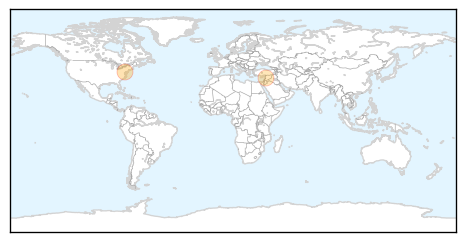
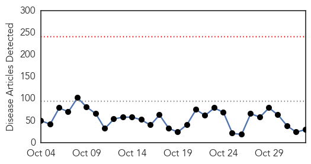

Hepatitis
30-Day Web Trend
0 alerts, 0 warnings

30-Day Twitter Trend
0 alerts, 0 warnings

Article Locations
Article Confidences

Top Articles:
Top Tweets:
-
No tweets found for Nov 02, 2014
Unknown
30-Day Web Trend
0 alerts, 0 warnings

30-Day Twitter Trend
2 alerts, 0 warnings

Article Locations

Article Confidences

Top Articles:
- 0.980
- KSWO, Lawton, OK- Wichita Falls, TX: News, Weather, Sports. ABC, 24/7, Telemundo -
- 0.960
- Farmers hope new steps will contain epidemic killing piglets
- 0.920
- Every child to be offered the flu vaccine in government scheme
- 0.917
- Chicago Tribune
- 0.905
- Google Retools Its Flu Prediction Engine After Getting It Wrong
- 0.866
- Bomb kills 14 Shi'ite pilgrims in Baghdad's Sadr City
- 0.866
- Pakistani Taliban claim responsibility for Pakistan-India border attack
- 0.866
- At least 35 killed, up to 70 wounded in Pakistan-India border blast
- 0.866
- U.S., allies conduct seven strikes on Islamic State in Iraq, Syria
- 0.866
- Solar Impulse 2 aircraft is pulled out of its base for tests by pilot Bertrand Piccard in Payerne
- 0.866
- France says French soldier killed in Mali during anti-terrorist operation
- 0.833
- Tyler Hospitals Complete Smallpox Plan - KLTV.com-Tyler, Longview, Jacksonville, Texas
- 0.820
- Food Poisoning Costs U.S. $15,600,000,000 Yearly
- 0.800
- POV: Vote Yes Tomorrow for Mandatory Paid Sick Leave
- 0.795
- Health Warning for Algal Bloom at St Anne’s Lagoon lifted
- 0.747
- New Hampshire reports increase in gonorrhea; chlamydia and syphilis cases down
- 0.723
- Sharjah tops emirates with highest suicides - Emirates 24
- 0.671
- Ukraine rebels elect leader in vote dubbed a ‘farce’ by Kiev
- 0.671
- Remembering slain RFI journalists: 'Imagine a world without news'
- 0.671
- Army promises unity government as thousands protest in Burkina Faso
- 0.671
- Thousands protest against post-coup army rule in Burkina Faso
- 0.650
- Cavities again? Blame the Tucson water system ...
- 0.636
- Mom blames daughter's paralysis on flu shot
- 0.595
- Surgeons urge authorities to make weight loss procedures available in public health system
- 0.593
- Alarming rise in rates of untreatable gonorrhea
- 0.568
- Alabama state health reports unusual outbreak at 6 hospitals
- 0.567
- New test will combat major cause of preventable blindness in Africa
- 0.553
- Bovine tuberculosis in the UK- the bigger picture
- 0.550
- WFMJ.com News weather sports for Youngstown-Warren Ohio
- 0.504
- Kenya : Kenya may be producing half-baked doctors, report
Top Tweets:
- 0.614
- RT: IMED2014 bats with mers cov exp infection: no seroconversion
- 0.569
- RT: IMED2014 jamaican fruit bat experimental infection with MERS COV 10 bats: low level virus replication, shedding and so…